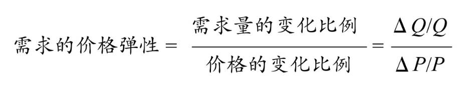

好经济学家与坏经济学家的区别只有一点，坏经济学家只能年岁可以看得见的后果，而好经济学家能同时权衡可以得见的后果和通过推测得到的后果。
经济学研究的是“事与愿违”的规律。
经济学关心的是存活的条件：一个人，一个组织，甚至一个制度，是如何存活下来的，需要什么条件才能存活下来。这些跟人是不是理性的没有关系。
当环境改变时，分析者可以知道哪种类型的参与者交付成功。如果我们改变规则，就能知道胜负概率的不同。
我们把经济学建立在“稀缺”这个基础上。但稀缺并不是一个假设，而是一个基本事实。稀缺是人类始终面临的基本约束，只要我们活在这世上，就必须面对。
由于东西总是不够的，资源总是稀缺的，人们在利用资源的时候，就不得不对资源的用途进行选择；而每当要做选择时，都必须采取某种选择的标准；一旦确定了选择标准，就意味着存在区别对待，而区别对待就是歧视。
当我们不需要付出多少价值时，就会纵容自己歧视的习惯；当我们要付出很高的代价时，就会节制自己歧视的习惯。
所有的企业家都在充当中间人的角色。他在猜有没有消费者愿意为他的经营活动买单。如果猜对了，他就赚钱；如果猜错了，就赔钱。
成本就是放弃了的最大代价（Cost is the best opportunity foregone）。
沉没成本，就是指那些已经发生但不可收回的支出。当然们没办法再收回、没办法再放弃时，就不存在成本。凡是提到成本，我们一定是向前（未来）看，而不是向后（过去）看的。所以，沉没成本不是成本。
负面感受不是我们的成本，只有我们需要放弃的最大代价才是成本。你的成本由别人决定。经济学的看法是，你拥有你的生命，但是你的生命是怎么度过的，你的职业是怎么选择的，很大程度上是由社会上其他人决定的。
无论是盈利还是亏损，在经济学里，都是意外发生的。每当发生意外，我们就重新调整资源的未来估值，而资源的使用成本，就要按照这个新的估值来计算。所以，一旦出现盈利，资源的使用成本就会提高；一旦出现亏损，资源的使用成本就会下降。
不是产品的原材料决定了产品的价格，而是产品的供需关系决定了产品的价格。而最终产品的价格再反过来，决定它上面一层又一层、一环又一环的原材料价格。
租，就是对资产的付费。包括土地、矿山、人的才能、发明创造，甚至是特权。只要能够带来收入的资源都叫资产，而对资产的付费就叫租。
寻租，即向那些向政府争取优惠政策，让自己得到好处，同时导致社会总资源发生耗散的行为。
社会成本，所有的伤害都是相互的，谁避免意外的成本最低，谁的责任就最大，整个社会为了避免意外所要付出的总成本就会降到最低。
科斯定律：在交易费用为零的情况下，不管资源最初的主要是谁，资源都会流到价值最高的用途上去。“谁用得好就归谁。”
交易费用：几是在一个人的社会里不存在，而在多个人的社会里存在的成本，就叫交易费用。
很多问题，不要讲理，要讲数。讲理谁都有道理，讲不清楚，要找合作解，就要讲数。找一个平衡点，这就是科斯定律给我们的一个重要启发。（寻求合作解）
个人估值：一个人对一件商品的个人估值，是他为了得到这个商品所愿意支付的其他商品的最高数量。
- 个人估值是个人的估值，不是集体的估值。
- 它是主观的，而且是绝对主观的。
- 个人估值不是以个人的愿望为基础，而是以他所愿意放弃的其他商品的数量来计算的。
边际，就是“新增”带来的“新增”。边际成本就是每新增一个单位产品所需要付出的新增成本；边际收入是每多卖一个产品能够带来的新增收入；边际产量是每新增一份投入带来的新增产量；边际效用是每消耗一个单位的商品所能带来的新增享受。
边际效用递减定律：在单位时间内，随着人们消耗的某种商品的数量不断增加，消耗这种商品所能带来的新增享受迟早都会下降。
一般来说，当我们把口袋里有限的钱，按“边际效用等于边际成本”的原则，分别用来购买不同的产品时，我们从这些不同的产品那里获得的总收益，就会达到最大。
我们吃馒头，馒头带给我们的效用在递减，但与此同时，我们每吃一块馒头，都要付出一定的成本。比方说你要为馒头付钱，这时候边际效用递减，它减到某个程度，边际效用就会低过你为馒头所付的价格。这时候你就会停止买馒头，停止吃馒头。换句话说，当你吃馒头的边际效用，高于你为多吃一个馒头所付出的边际成本的时候，你会继续吃馒头。但是倒过来，如果你为馒头所付的边际成本，高于馒头带给你的边际效用的话，你就要减少吃馒头。
边际平衡：资源是有限的，如何最有效利用有限的资源，使其获得最高的效用？办法就是把资源分摊到不同的用途上，并确保资源在这些不同用途上获得的边际效用都趋于相等；如果出现不相等，那就应该不断地把更多的资源挪用到边际效用较高的用途上，直到资源在这种用途上带来的边际效用下降到与其他用途的边际效用相等为止。
需求第一定律：当其他情况不变时，只要价格提高，商品的需求量就会减少；价格降到一定程度，需求量就会增加。
消费者剩余（交易剩余）：一个人对一件商品的个人估值，跟他为了得到这件商品所付出的代价之间是有很大差距的。这个差距，我们称之为”剩余“。
需求第二定律：需求对价格的弹性，和价格变化之后流逝的时间长度成正比。也就是说，随着时间的推移，需求对价格的弹性会增加。
需求对价格的弹性，就是需求量随商品价格的变动而变动的程度，它等于需求量的变化百分比除以价格变化的百分比。其含义是：每当价格变化百分之一，需求量会变化百分之几。

弹性大于1，表示只要价格发生一定幅度的变化，需求量就会有更大幅度的变化。一般来说，奢侈品有这个特点。
弹性小于1，表示价格发发生一定幅度的变化，需求量也发生了变化，但幅度更小。一般来说，生活必需品有这个特点。
当商品足够便宜的时候，它自然就成为必需品；当它贵到一定程度，它就自然变成奢侈品。
需求第三定律：精选品和普通品之间的价格本来是有较大差距的，但是加上一笔附加费以后，它们的差距就缩小了，精选品显得便宜了。而附加费越大，这种效果就越显著，精选品就显得越便宜。附加成本大，精选品才值得。（好东西运到远方去定律）
在现实生活中，永远是具体的情况、具体的案例发生在行。每一宗交易，都要在一个具体的情境下进行，没有了它就不会有汇总的数字。价格是每一个人发自他们内心，根据他们的实际情况，最后达成的一个结果。
价格的三个作用：传递关于稀缺的信息、指导生产、指导分配。
回顾中国的经济改革，如果只用一句话来概括，就是有关竞争规则改变的改革：从过去看排队的时间，看出身，看政治面貌，变成看出价的高低。
短缺是指因为价格受到了抑制，人们仅仅用出价的办法买不到这种商品，而只有采取其他的竞争方式才能得到这种商品的情形。
过剩不是供给过多，而是商品的价格被人为地抬高，以至卖家必须搭配其他的竞争手段或服务，才能把商品卖出去的现象。过剩是被人为拔高的结果。
权利：阿尔钦“产权是一种通过社会强制而实现的、对某种经济物品的多种用途进行选择的权利。”权利是通过社会强制而实现的，是别人授予我们的；不是我们自己认为有就有，而是别人认为我们有才有；要别人愿意出来保护我们行使的自由，才能叫权利。这是权利的特征。
能力取决于自己能够占有多少，而权利取决于社会上其他人愿意给你多少。
产权保护有三个基本原则：
- 财产原则：一个要想要剥夺别人的产权，只有一个办法，那就是买过来。政府对产权进行确权。
- 责任原则：当一个人侵害了别人的产权以后，侵害者就要向产权所有者赔偿，赔偿金额由第三方确定。政府确权，决定赔偿金额。
- 不可转让原则：政府禁止所有权人把他所有的资产转卖给别人。政府确权，定赔偿金额，或禁止转让。
私用品最关键的含义是一个人用，别人就不能用；相反，一个人用的同时不影响别人使用的商品，叫公用品。关键就是看一个用别人还能不能用。
- 竞争性：一个人能用，别人也能用，称为“没有竞争性”；一个用了别人就不能用，称为“有竞争性”。
- 排他性：一件商品在实际使用时，物主能不能很方便地把其他的使用者排除在外。如果能方便做到，就秒杀有非他性；不方便，就不具有排他性。
根据时间的维度，世界上的所有产品、商品、资源，都可以简单地划分为两种：
- 易耗品：能一次性消费完毕的物品。
- 耐用品：它提供的服务、发挥的功能，必须在一个时间段内慢慢发散出来。要花费较长时间才能享受的物品。
一种耐用品，只有在时间的维度上才能体现它的价值，发挥它的功能。这是耐用品的含义。任何一种能够带来收入的资源、本领或者禀赋，都是一种耐用品。
不耐（确定性偏好）：其他情况不变，人们总是希望早一点消费，因为早一点消费是确定的消费，晚一点消费是不确定的消费。
利率是人们推迟消费时索取的一种补偿，未来越是不确定利率就越高。
欧文·费雪：投资是时间维度上的平衡消费。每一个人追求的，不是今天的消费最大化，也不是明天的消费最大化，我们要追求的是，是终身每一个时间点的收入之和最大化。
比较优势原理：在一个社会里，每个个体如果把有限的资源，包括时间和精力，只用来生产对他们来说机会成本比较低的那些产品，然后跟别人进行交换，这样整个社会产品的总价值就能达到最大，而且每一个个体的境遇都能得到改善，而不论它们的绝对生产能力是高还是低。
完全竞争状态（理想竞争状态）：市场里有数不清的买家和卖家，交易的都是同一种商品，任何一位买家或卖家，都不能通过控制买卖量来影响价格，因为他个人的买卖量跟整个市场的买卖量相比是微不足道的。与此同时，任何一位买家或专家，都可以随时进出市场；市场的信息也是完全自由流通的，大家都知道他们要买卖的商品是什么，价格是多少。整个市场的交易费用也很低，没有讨价还价、尔虞我诈的过程。受价者。
不完全竞争状态：每一位卖家所卖的产品，在品质上都不一样。信息不完全流通、不完全对称，交易费用是正的，存在讨价还价、尔虞我诈的现象。觅价者。
真实的世界中，每一位供应商都力争给消费者提供不同的产品，力争把自己的产品做得更有特色，这样的社会才是理想的竞争状态。
要成功实施价格歧视，最重要的就是要防止消费者之间对同样的产品进行转售。越是难以阻止消费者转售的产品，就越难实施价格歧视。

衡量一个市场的竞争程度，主要的一个标准，就是看一个行业的入口处有没有行政设置的障碍。有，这个市场竞争程度就有限；没有，市场就是激烈竞争的。
人和人之间本来是没有互信的，高品质的产品要把自己彰显出来，与低品质的产品区分开来，需要很大的成本。如果这个问题不解决，就会出现劣币驱逐良币的现象。当消费者无法分辨哪一件是高品质产品、哪一件是低品质产品时，他们就会离场，卖家也同样会离场，市场就会崩溃。
优质：
- 优质的第一层含义是指匀质，不是说厂商能把产品的品质做到多好，而是说产品的品质要维持一个稳定的水平。同一批产品中，一件产品的品质，跟另一件产品品质之间的差距不能大，而且差距越小越好。
- 优质的第二层经济学含义是指，为了提高产品的质量要付出的边际成本应该跟它得到的边际收益相等。当提高产品质量的边际成本等于边际收益时，我们说它达到了优质的标准。
严格责任：只要产品出现明显的质量剖一，无需证据就可以判企业疏忽，企业应该对自己的产品负有严格的责任，顾客不需要提供关于疏忽的证据就能够获得赔偿。
企业是能够无中生有地带来额外收益的一种经济组织，每一个成员的收入取决于他对团队的边际贡献。
企业管理的本质：防止劳动力滥用资本。企业管理的核心问题就是如何防止劳动力剥削、滥用、操控资本，企业管理的目的就是让劳动力的利益向资本的利益看齐。
经济学家把那些高度依赖于所在企业平台的资源，称为企业的专用资源；而把那些无论放到哪个企业都能发挥差不多的功能、获得差不多收益的资源，称为企业的通用资源。
同工同酬：
- 市场竞争能尽量消除由于性别歧视而引起的同工不同酬现象
- 男女工作绩效是否相同，必须从多角度进行评估
- 硬性的同工同酬法会剥夺与强者展开竞争的最强武器，从而导致事与愿违的结果